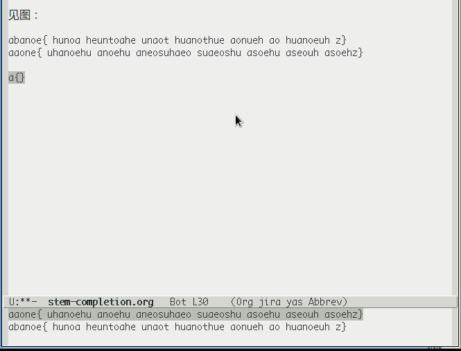

skeleton-completion
Table of Contents
1 What's not good enough
Emacs completion (aka expand) is great, the hippie-expand is mostly useful.
But I have found it insufficient, for the following reasons.
- Hippie-expand requires you to start matching at the beginning.
But not all interesting (and thus easy to remember and easy to type) components are at the beginning. A lot of softwares including Emacs itself have started to allow user type a component from anywhere in the final string and match it just fine. For e.g., the anything.el (now renamed helm); firefox's url type and match; and Emacs's built in
C-h f(where you can type-helloand typeTab, and Emacs will expand it toview-hello-file: you do not need start withview. Not so with hippie-expand). - Selecting from multiple matches is not instinctive
最早在 水木Emacs版的这个贴子 里讨论了这种补齐，一开始只是id补齐：
刚刚写了一段补齐的elisp程序，目的是想要比自带的dabbrev补齐少敲几下键盘。
在用dabbrev补齐的时候，它会按照前缀是不是匹配来补齐，这样做有时候不能省 按键次数。举个例子，如果你有好几个变量都是以相同的前缀开头，比如从
variable_0到variable_10（当然，只是举个相同前缀的例子，实际情况 应该不会以0到10来结束），那么补齐的时候会按照某种顺序一个一个的试。相同 前缀越长，你在补齐之前需要打上去的字数也越多；相同前缀的名字越多，你需 要敲补齐键选择的次数也越多。也就是说关键字母并不一定都是在前缀里，你应该可以自己选择关键字母去补齐。
参考ecomplete里的代码，我写的这个补齐只要打两个关键字母v和0，它就会把所有包含v和0 的单词给列出来让你选，这样补齐之前就可以只打两个字符，补齐之后也只要做两 次选择了。
很快 wuhaochi同学 建议应该做一个基于正则表达式的任意字符串（而不是仅限 于identifier）的补齐，我很高兴的实现了。
其实类似的人机接口在firefox的地址栏里也可以见到，输入几个字，在任意位置 匹配这些字的历史url就会被过滤出来让你挑选（也就是补齐）。
见图（只要打3个字母，就允许我补齐相当长的字串，所以经常能省打很多字）：

使用这种补齐方式的优点是（与eclipse等IDE中的java上下文智能补齐相比）：
- 适用于任何编程语言。
- 便宜。
- 效率。
当然，缺点也很明显：
- 只能补齐当前buffer中已经出现过了的字或字串（这个已经做了改进，所有可
见的buffer都会参与匹配，如果没找到的话，还会继续进入
(buffer-list)中不可见的部分去查找）。 - 由于1）中提到的改进，以及本身实现的头脑简单性，有可能会进入类死循环，
需要按
C-g退出。 - 补齐函数名之后，不能很轻易的看见该函数的参数列表是乍定义的。
具体实现见 github代码 。